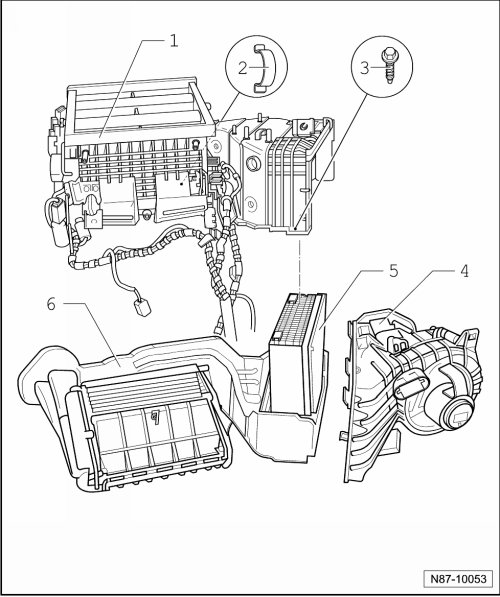
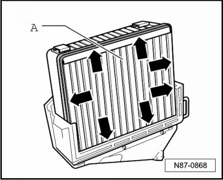

A/C Unit Overview
A/C Unit
- Remove heating and A/C unit. Refer to --> [ A/C Unit ] A/C Unit

1 Upper part of air distribution housing
• The upper section is attached to the lower section with bolts - 3 - and clips - 2 -.
2 Clip
• Quantity: 3
3 Securing bolts
4 Blower housing
5 Evaporator
• Note seal --> [ Seal at evaporator ]
6 Lower part of air distribution housing
Seal at evaporator

Note circular seal - arrows - at evaporator.